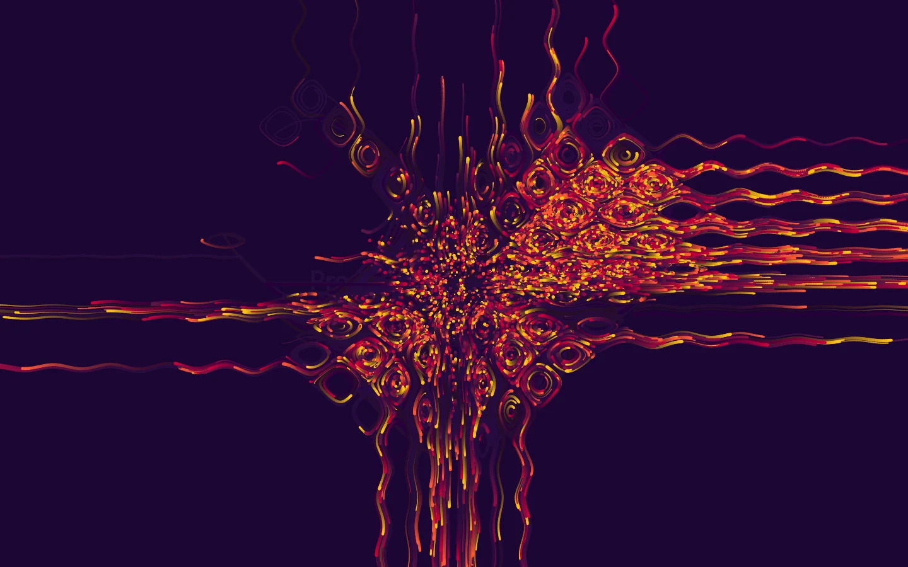
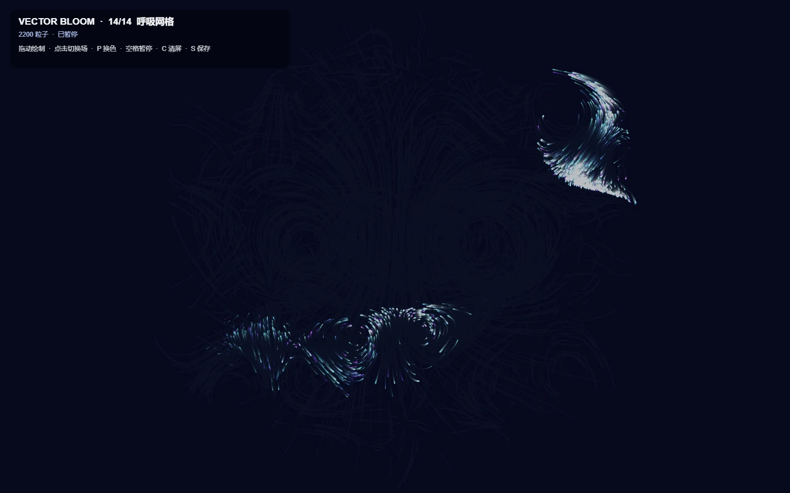
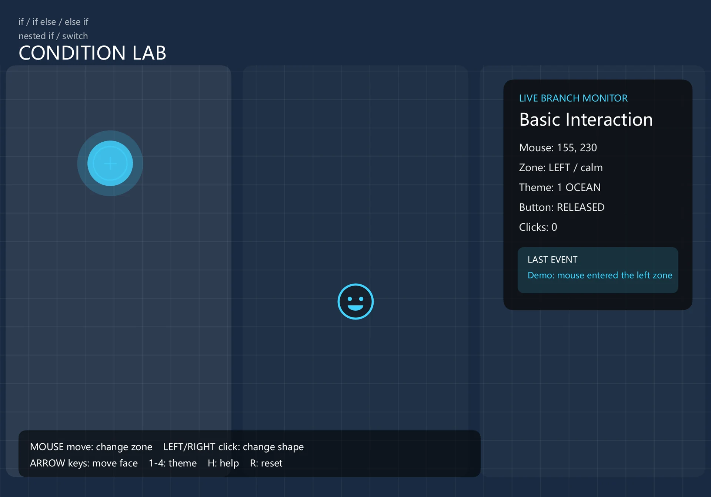
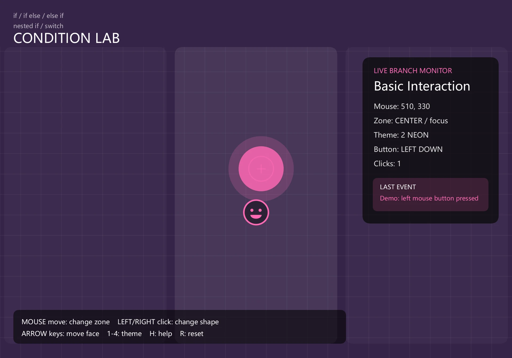
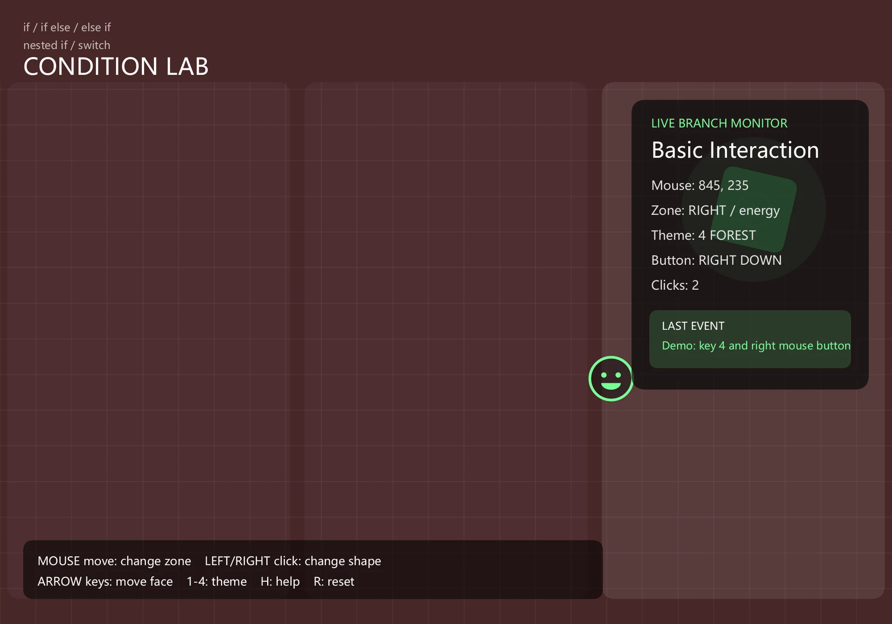

粒子流场
以向量场控制粒子运动，尝试星云双涡、呼吸网格等形态，并通过参数和配色观察轨迹密度与节奏的变化。
创意编程 / 算法艺术

这组课程实验以 Processing 与 p5.js 为工具，把图形生成、鼠标操作、摄像头和声音输入组织成实时视觉系统。实验关注输入如何被读取、转化并反馈到画面，以及少量规则怎样产生持续变化的视觉结果。
以向量场控制粒子运动，尝试星云双涡、呼吸网格等形态，并通过参数和配色观察轨迹密度与节奏的变化。
将画面亮度转化为扫描线，组合 RGB 偏移、轮廓与拖影效果。线间距、强度和线宽等参数成为可直接调节的视觉变量。
把摄像头运动与麦克风信号转化为涟漪、折射和动态变化，探索身体动作、声音与画面的对应关系。
通过反复修改规则、调整参数和对照画面，逐步理解程序如何影响运动方向、形态和视觉节奏。截图同时记录了鼠标条件交互等基础练习；相关网页可用于体验其中的实时实验。
粒子流场练习在 Vamoss 的 OpenProcessing 示例基础上改写，原始示例链接与署名保留在代码中。这里将其作为学习与扩展实验展示。
点击图像放大查看，可使用左右方向键切换。




